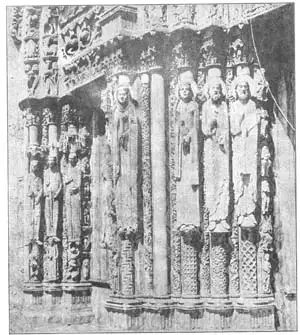
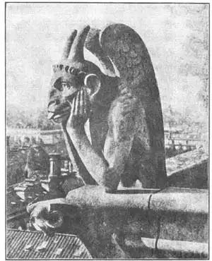

43
STORIES IN STONES
石头里的故事

WHAT would you call men who went about with hammers and broke all the statues they could find, and who even went into churches and broke the statues there? Probably you would say they were bad men or crazy and should be locked up.
You would be right, and they would be locked up nowadays. But long ago (about 800 A.D.) such men were not bad or crazy, and no one tried to lock them up. They broke statues because they thought statues were too much like idols. They thought a church especially should have nothing like an idol or an image in it. An image is called in Greek an icon and these men were called iconoclasts , which means image smashers. They smashed a great many statues, and the poor sculptors had to move away from the cities where the iconoclasts were if they still wanted to make statues.
However, the iconoclasts didn’t seem to mind small sculptures in relief. And so in the time of the iconoclasts and for many years afterward many beautiful bas reliefs in ivory, silver, and gold were made. The carvings in ivory were used as the covers of books, writing tablets, and little boxes. The place to see them now is in museums where they are kept carefully in glass cases. When you look at them, remember the iconoclasts and why there were no good statues in the full round for a long time after the Romans.
Some sculptors had to leave Byzantium—the old name for Constantinople which was the old name for Istanbul—because of the iconoclasts. They traveled to France and carried on their work there. And it is to France that we turn for our next great statues. They belong to the Middle Ages, several hundred years after the iconoclasts. And, strangely enough, these statues were all carved for churches—just what the iconoclasts didn’t want! In fact, the churches were simply covered with statues, which were made of the same kind of stone as the buildings and not of marble like the Greek and Roman statues. These statues were really part of the churches. The cathedral at Chartres, in France, has not less than ten thousand figures of men and animals on it. They are everywhere—over the doorways, on the columns, on the roof, under the windows, on the walls. Even the waterspouts are carved in the forms of queer animals.
Most of the people of the Middle Ages could neither read nor write, so all these sculptures on the churches took the place of books. They told the people stories of the Bible and of the saints. You see they were useful as well as ornamental.
They are called Gothic figures because churches anti cathedrals of the Middle Ages were built in the Gothic style. The Gothic figures on a cathedral are of almost every kind of living thing you could think of. There are scenes from the Bible, statues of saints, carvings of animals and flowers, pictures in stone of the seasons, of different kinds of work like farming and writing, wood chopping and fighting There are figures of men and women, of actual creatures and of strange unheard-of make-believe creatures. And each of these figures was made for that particular part of the cathedral where it was placed. The statues were not stuck on after the cathedral was built. They were a part of it, built into it, and made of the same stone.
Do you remember when you had a sore throat and had to gargle? On the Gothic churches there are statues that gargle. They don’t have sore throats, of course, but they gargle every time it rains. They are rain spouts and have holes in them so water can run out through their mouths. Like the statues that told the stories of the Bible, they are useful as well as ornamental. We call them gargoyles , which is another way of saying they gargle.

No.43-1 GOTHIC FIGURES ON CHARTRES CATHEDRAL（沙特尔大教堂的哥特式雕像）
Courtesy of Pratt Institute
The gargoyles were carved in the shapes of the queerest animals you can think of. Some have heads like monkeys, some have three heads, some have their tongues sticking out as if they were making faces. Some have claws like eagles, others hands like men.
The queer animals that weren’t made to gargle are called grotesques. Most of them are up near the roof like the gargoyles and seem to be looking down and laughing at the people on the ground. The sculptors on the old cathedrals must have enjoyed carving their grotesques and gargoyles.

No.43-2 . GROTESQUE ON CATHEDRAL OF NOTRE DAME IN PARIS
（巴黎圣母院主教座堂屋顶上的怪物雕像）
【中文阅读】
那些拿着锤子见到雕像就砸的人，应该叫他们什么呢？他们甚至冲进教堂砸雕像。我们可能会说他们是坏人，是疯子，应该逮捕他们。
说得对。事情要是发生在今天，他们一定会被关进监狱。但在很久以前（约公元800年），他们并非坏人或疯子，也没人要抓捕他们。他们认为雕像太偶像化，所以 要打碎。他们又认为教堂里尤其不应该有偶像或任何形象。希腊语中，“形象”一词有“偶像”之意。所以那帮人被称作“偶像破坏者”，意思是粉碎形象者。这些人砸碎了许多雕像。而可怜的雕刻家们要想继续制作雕像的话，就不得不逃离偶像破坏者所在的城镇。
然而，这些破坏者似乎并不在意小浮雕。所以那时以及后来的许多岁月里，雕刻家用象牙、金、银刻了许多精美的浅浮雕。如通常用于书的封面、写字板和小盒子上的象牙浮雕。如今只有在博物馆才能看到它们，因为都被小心翼翼地存放在玻璃橱窗里。我们在欣赏时，想一想那些破坏者，就会意识到为什么罗马之后很长时间不见好的圆雕作品出现。
为躲避破坏者，有些雕刻家不得不离开拜占庭——后来叫君士坦丁堡，现在叫伊斯坦布尔。他们流亡法国，在那里继续创作。他们正是去了法国后，才为我们开创了伟大雕像的新篇章。这些雕像属于中世纪，晚于破坏者几百年后创作的。奇怪的是，这些雕像又是为教堂雕刻的，而这显然是破坏者不愿意看到的！事实上，教堂的石雕都很简陋，材料就是建教堂的石头，不像古希腊罗马用大理石雕像。但石雕确是教堂不可分割的组成部分。法国沙特尔大教堂有不少于一万座人物和动物雕像。这些雕像遍布教堂的每个角落，像门道口、立柱上、屋顶上、窗檐下或墙壁上。就连排水口都雕刻了许多稀奇古怪的动物像。
中世纪时，多数人不会读写，所以就用教堂雕像取代书本，讲述《圣经》和圣徒的故事。因此，它们不但具备观赏性，还具有实用性。
由于中世纪教堂都呈哥特式风格，所以就称这些雕刻为“哥特式雕像”。大教堂里哥特式雕像刻画的是我们所能想到的所有生物，像《圣经》场景、圣徒像、动物像和花饰等，还有四季风景、农作、写作、伐木，甚至战斗等不同种类的石刻画。此外，像男女雕像、已知和奇怪的未知生物雕像等，每一座都为教堂的特定位置而设计。这些石雕不是在教堂建好后才放上去的，它们本就是教堂的一部分，它们既作建材，又是雕像。
还记得我们嗓子痛要漱口的情形吗？在哥特式教堂，有些雕像也会漱口。当然，雕像喉咙不会痛，它们是因天下雨而漱口。其实雕像上的洞口是出水槽，让雨水从洞口流出。同那些讲述《圣经》故事的雕像一样，这些排水的雕像同时具有观赏性和实用性。我们把这种雕像称作“滴水兽”。这是漱口雕像的另一种说法。
滴水兽的形状是你能想象的各种千奇百怪的动物。有些滴水兽是猴头状的，有的长着三个头，还有的伸出长长的舌头，像在做鬼脸。还有一些雕像长着像鹰那样的爪子，也有的像人手。
那些不排水的动物像也刻得奇形怪状，通称“怪物雕像”。像滴水兽一样，它们大多安置在屋顶旁，好像在往下看，嘲笑地面上的人们。这些古教堂的雕刻家们一定很喜欢雕刻怪物和滴水兽吧。